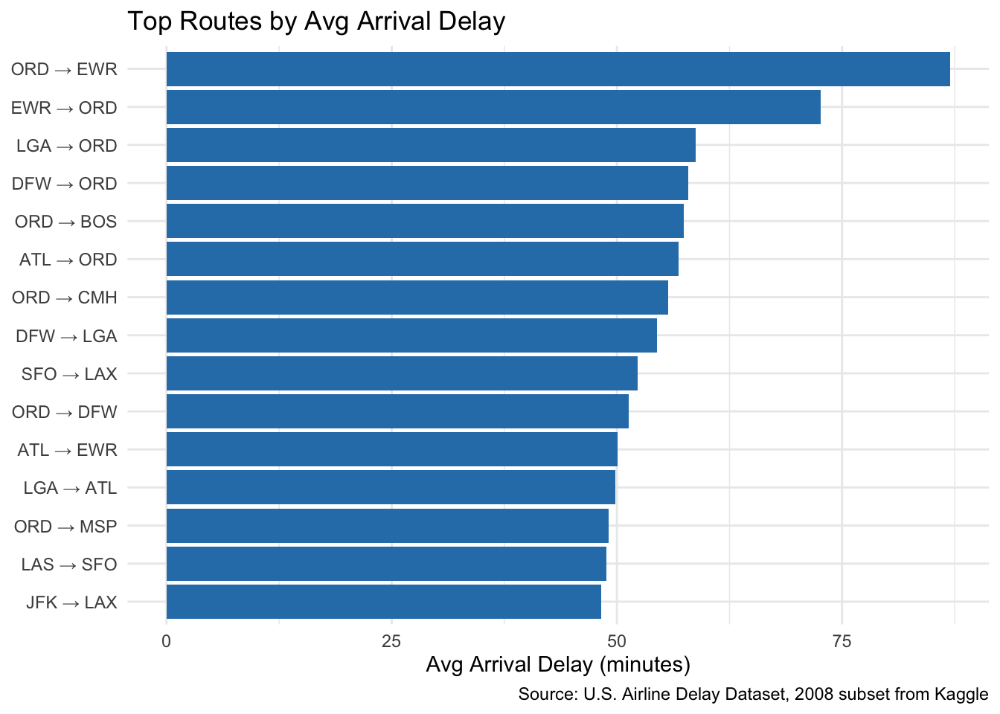
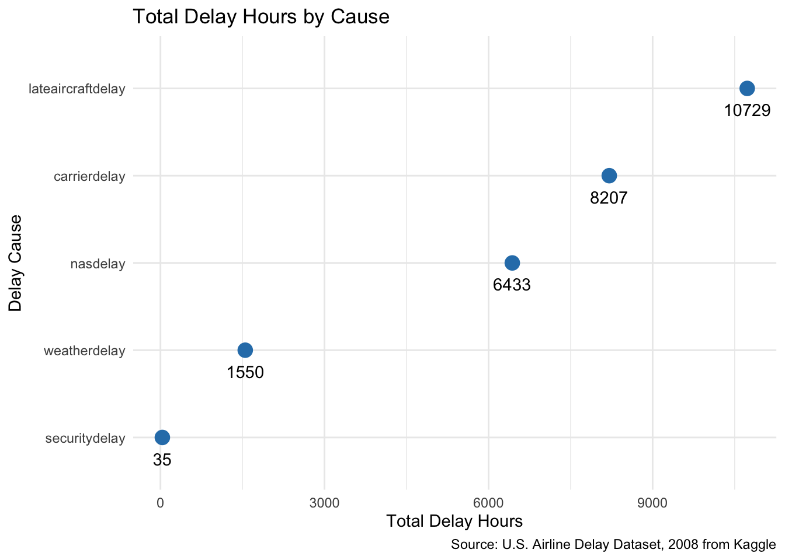
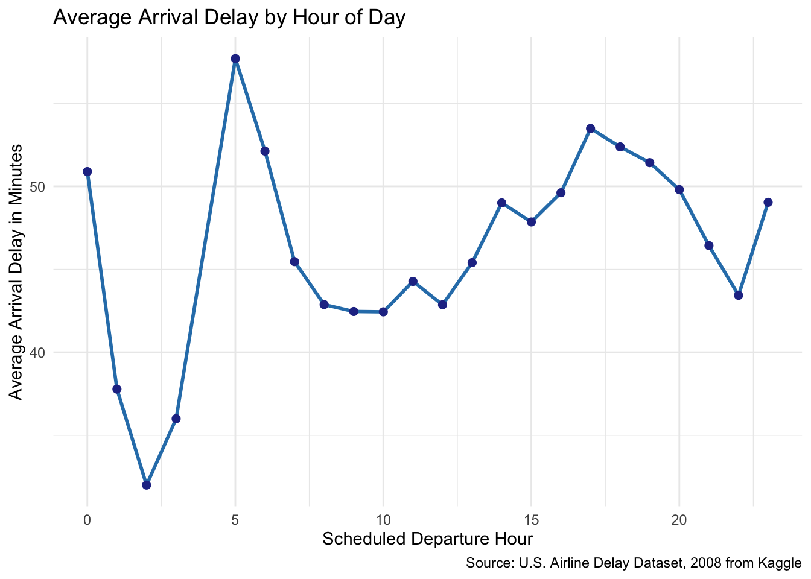

My data is a subset from the U.S Airline delay dataset from Kaggle released in 2008. It had near about 2 million rows, i created my own working subset by randomly sampling around 40000 rows using python.
Data Description
In this data, each row is one individual flight. It has information such as when the flight was scheduled, when it departed or arrived, the airports involved and different causes of the delay.
Some key variables in my project are:
DepTime - Actual Departure time (HHMM Format)
ArrDelay - Arrival delay (Numeric)
Origin - Origin Airport Code (String)
Dest - Destination Airport Code (String)
CarrierDelay - Delay caused by airline carrier (Numeric)
WeatherDelay - Delay caused by weather (Numeric)
SecurityDelay - Delay Caused by Security (Numeric)
LAteAirCraftDelay - Delay caused by late incoming aircraft (Numeric)
NASDelay- Delay caused by National Aviation System. (Numeric)
Research Questions
My main research questions are
When do flight delays peak during the day?
Which causes of delay contribute thre most total delay time?
Which flight routes have the worst average delays?
These questions tells us when delays happen and why they happen while also giving us information regarding which routes are affected the most.
Data Visualization
What do you want your final visualization to look like?
Initially i opted for just bar graphs for all three questions, but after brief discussions with the professor i might have to select different visualizations for each question. I am currently in the process of choosing what visualization to do for each question. Right now i am in the process of doing heatmap for question 3.
What do you want to highlight on your final visualizations in order to answer your research questions? How do you plan to do that?
I want the first question to be self explanatory, by using a simple bar graph the audience can easily see where flight delays occur. I plan on ordering it either by desc or ascending and plan on making use of gestalt principals for this. I am deciding what visualization to use for my second question but for the third question using a heat map seems like a good option as i can use different color intensities to show which routes have a higher average arrival delay.
What is missing from your data or would need to change in your data to create these visualizations ?
I need to convert HHMM format of time variables to hour based to make it usable for my graphs. There are also some columns that have missing values which i will deal with in the section below.
Data Cleaning
Do you need to reformat any varibles into different yes, or remove information from variable values?
Yes, several variables need to be reformatted. Scheduled departure time is stored in HHMM format and would need to be converted into hour based variable.
Do you need to deal with any missing data, especially missing data coded other than NA?
Yes, there are some missing values in delay causes. These will be removed. I am intending to use na.rm = TRUE for these when calculating mean delays or total delay hours.
Do you need to create any new variables? What variables? How?
Yes, i will be making a hour variable from departure time by extracting hour from HHMM value. I also create a route variable by combining origin and destination airport codes.
Library Setup
#To do add captions, alt textlibrary(tidyverse)
── Attaching core tidyverse packages ──────────────────────── tidyverse 2.0.0 ──
✔ dplyr 1.1.4 ✔ readr 2.1.6
✔ forcats 1.0.1 ✔ stringr 1.6.0
✔ ggplot2 4.0.1 ✔ tibble 3.3.1
✔ lubridate 1.9.4 ✔ tidyr 1.3.2
✔ purrr 1.2.1
── Conflicts ────────────────────────────────────────── tidyverse_conflicts() ──
✖ dplyr::filter() masks stats::filter()
✖ dplyr::lag() masks stats::lag()
ℹ Use the conflicted package (<http://conflicted.r-lib.org/>) to force all conflicts to become errors
# Clean versionflights_clean <- flights |># Renaming all columns to be lower case.rename_with(tolower) |># Selecting only useful columnsselect( year, month, dayofmonth, dayofweek, uniquecarrier, flightnum, origin, dest, crsdeptime, deptime, depdelay, arrdelay, cancelled, diverted, carrierdelay, weatherdelay, nasdelay, securitydelay, lateaircraftdelay ) |># Converting columns to numeric. # Use accross as suggested by the profmutate(across(c(depdelay, arrdelay, crsdeptime, deptime, cancelled, diverted, carrierdelay, weatherdelay, nasdelay, securitydelay, lateaircraftdelay), as.numeric))
Visualization 1
We see the top 15 flight routes with the highest average arrival delays in this graph. Each bar represents one route, combining the origin and destination airport codes. The longer the bar, the higher the average arrival delay for that route. This helps identify which routes were most affected by delays in the dataset. The graph is also ordered to make the perception easier.
This graph helps us with the research question: Which flight routes have the worst average delays? as we can identify which routes have the worst average delays by looking at the length of the bar.
plot_top_routes <- flights_clean |>transmute( #Keeps only the route columns and arrival delay columnorigin = origin,dest = dest,arr_delay = arrdelay ) |>filter(!is.na(origin), !is.na(dest), !is.na(arr_delay)) |>#Removing rows with missing origin, destination, or arrival delay values.group_by(origin, dest) |>#Groupihng the data by each origin and destination airportsummarise( #Calculation average flights =n(),avg_arr_delay =mean(arr_delay),.groups ="drop" ) |>filter(flights >=50) |>#Keeps only routes that have atleast 50 flights.unite("route", origin, dest, sep =" → ") |>#Combines origin and destination columns into one route column using an arrow symbol for easier understanding.slice_max(avg_arr_delay, n =15) |>#Selecting the 15 routes with the highest average arrival delays.arrange(avg_arr_delay) #Ordering ggplot(plot_top_routes, aes(x = avg_arr_delay, y =reorder(route, avg_arr_delay))) +geom_col(fill ="#2C7FB8") +labs(title ="Top Routes by Avg Arrival Delay",x ="Avg Arrival Delay (minutes)",y =NULL,caption ="Source: U.S. Airline Delay Dataset, 2008 subset from Kaggle" ) +theme_minimal()

Top 15 flight routes with the highest average arrival delays.
Visualization 2
This plot shows the total delay hours for each delay cause in the dataset. Each point represents one delay category, such as carrier, weather, NAS, security, or late aircraft delay.
This visualization helps answer the research question: Which causes of delay contribute the most total delay time? By looking at the points, we can see which delay causes had more impact on overall flight delays.
delay_causes <- flights_clean |>select(carrierdelay, weatherdelay, nasdelay, securitydelay, lateaircraftdelay) |>pivot_longer( #Puts all delay types into one column.cols =everything(),names_to ="delay_cause",values_to ="delay_minutes" ) |>group_by(delay_cause) |>#Groups the data by each type of delay cause.summarize(total_delay_hours =sum(delay_minutes, na.rm =TRUE) /60 ) |>arrange(total_delay_hours)ggplot(delay_causes, aes(x = total_delay_hours, y =reorder(delay_cause, total_delay_hours))) +geom_point(size =4, color ="#2C7FB8") +geom_text(aes(label =round(total_delay_hours, 0)), vjust =2.25) +#Adding text (hours value) below each dot in the graph and rounding to 0.labs(title ="Total Delay Hours by Cause",x ="Total Delay Hours",y ="Delay Cause",caption ="Source: U.S. Airline Delay Dataset, 2008 from Kaggle" ) +theme_minimal()

Total delay hours by delay cause.
Visualization 3
This line plot shows the average arrival delay by scheduled departure hour. Each point represents one hour of the day, and the line shows how average delay changes throughout the day.
From the graph we can see that average arrival delays are not the same across all hours. The highest average delay appears around the early morning hours, with another increase later in the day during the evening.
This visualization helps answer the research question: When do flight delays peak during the day? We see the overall pattern and can identify the times when delays are highest.
delay_by_hour <- flights_clean |>mutate(dep_hour =floor(crsdeptime /100)) |>#Converting scheduled departure time from HHMM format into just the hour.filter( #removing missing values, keeping hours 0 to 23.!is.na(dep_hour),!is.na(arrdelay), dep_hour >=0, dep_hour <=23, arrdelay >0 ) |>group_by(dep_hour) |>summarize( #Calculates the average arrival delay for each hour.avg_arr_delay =mean(arrdelay, na.rm =TRUE) )ggplot(delay_by_hour, aes(x = dep_hour, y = avg_arr_delay)) +geom_line(color ="#2C7FB8", linewidth =1) +#Adds a line to show the delay trend across the day.geom_point(color ="#253494", size =2) +#Adds points for each hour.labs(title ="Average Arrival Delay by Hour of Day",x ="Scheduled Departure Hour",y ="Average Arrival Delay in Minutes",caption ="Source: U.S. Airline Delay Dataset, 2008 from Kaggle" ) +theme_minimal()

Average arrival delay by scheduled departure hour.